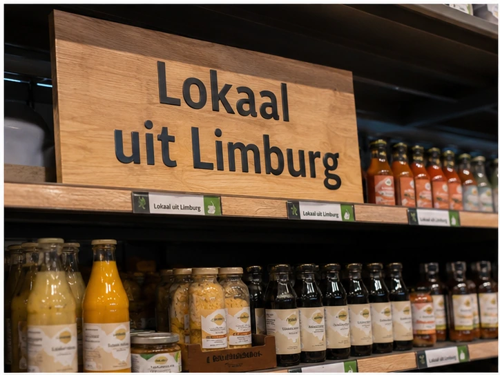

Echte herkomst
Laat zien waar je producten vandaan komen en geef gasten een verhaal bij hun gerecht.
Lokale inspiratie voor MKB-horeca
Ontdek praktische recepten, productideeën, herkenningspunten in de winkel en verhalen waarmee je gasten een echt lokaal verhaal kunt vertellen.


Nieuw voor ondernemers
Lokale producten met een verhaal dat jouw gasten onthouden.
Van een streekkaas op de borrelkaart tot een lunchspecial met seizoensgroenten: met lokale producten geef je je kaart meer herkomst, meer beleving en meer gesprek aan tafel. Deze omgeving helpt je om snel te zien wat er mogelijk is.
Laat zien waar je producten vandaan komen en geef gasten een verhaal bij hun gerecht.
Gebruik lokale producten om je borrelplank, lunchkaart of dinerkaart onderscheidender te maken.
Combineer lokale inspiratie met het gemak van één vertrouwde foodservicepartner.
Kant-en-klare ideeën voor lunch, borrel, dessert en arrangementen.
02Menukaartteksten, krijtbordkreten en social-postideeën.
03Productcategorieën die snel toepasbaar zijn in je zaak.
04Zo herken je lokaal uit Limburg op schap, krat en display.
05Lees makers- en ondernemersverhalen die je zelf kunt doorvertellen.

Uitgelicht recept
Een toegankelijke plank met streekkaas, charcuterie, brood en smaakmakers uit de regio. Ideaal voor cafés, restaurants, hotelbars en concepten waarbij je snel een lokaal verhaal op tafel wilt zetten.
Naar het receptConcrete inspiratie

Maak van een koffiemoment iets extra’s met brood, banket of een mini-proeverij in lokale stijl.
Bekijk idee
Een snelle lunchspecial met lokale ingrediënten, passend bij gemak én onderscheid.
Bekijk recept
Laat gasten zien waar een product vandaan komt met een tafelkaart, menutekst of herkomstverhaal.
Lees hoeAan de slag
Ontdek producten, recepten en leveranciersverhalen die jouw menukaart meer herkomst en smaak geven.